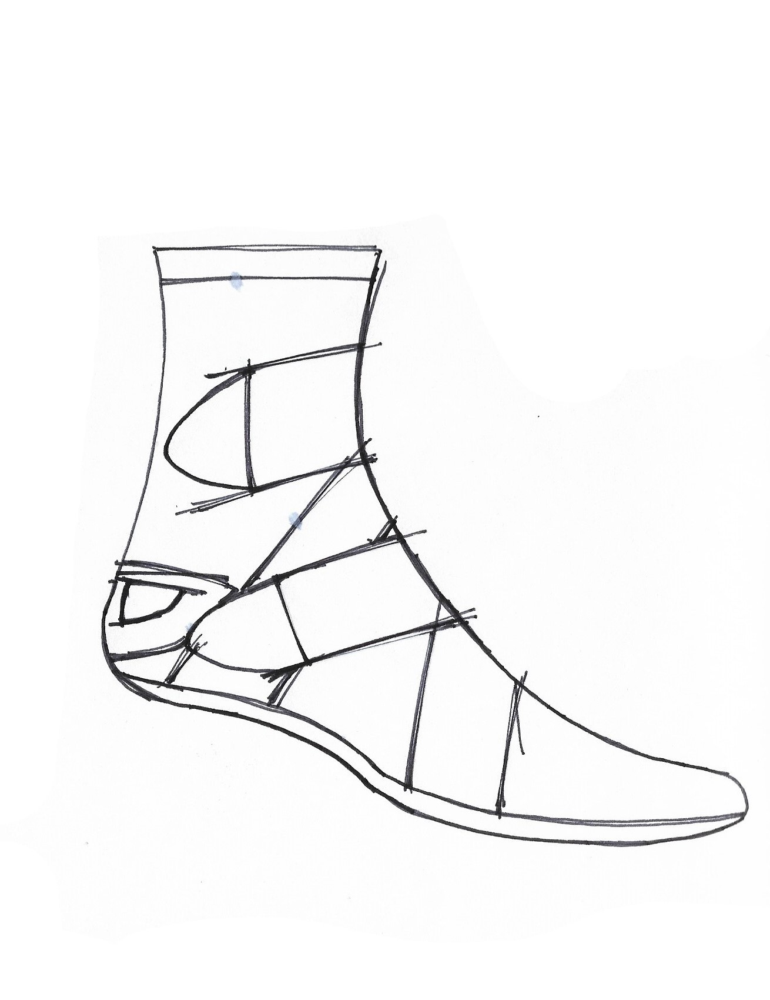
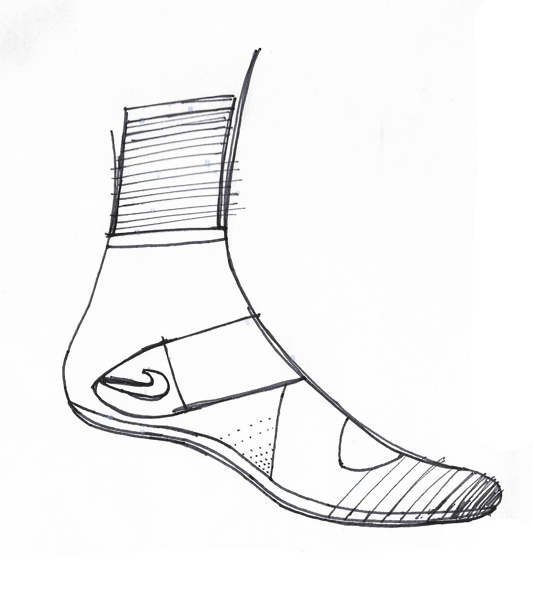
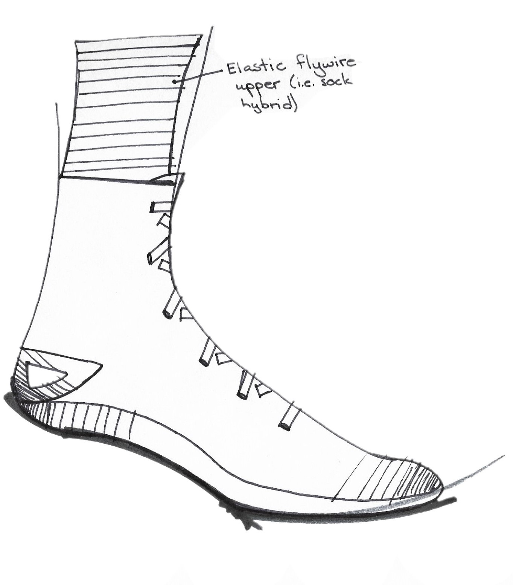
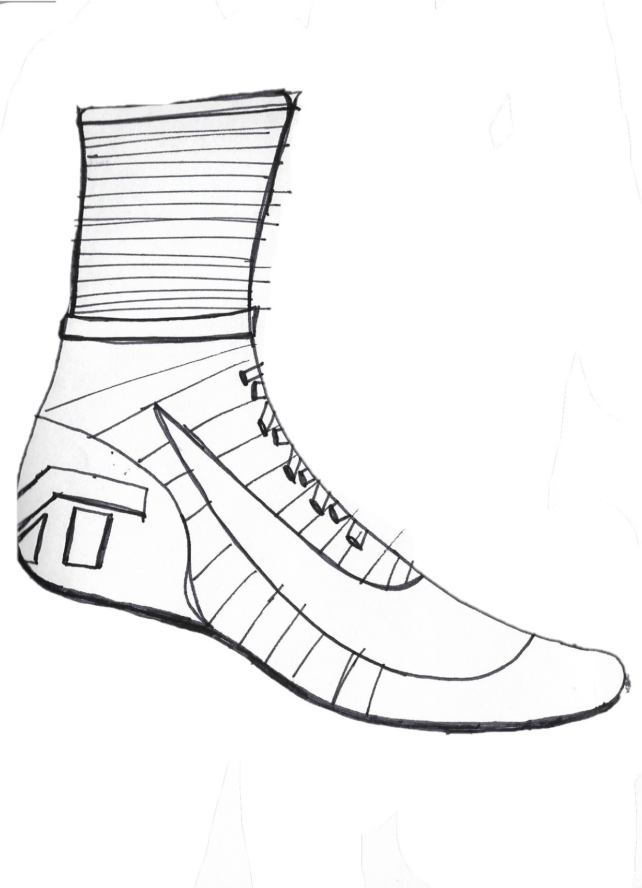
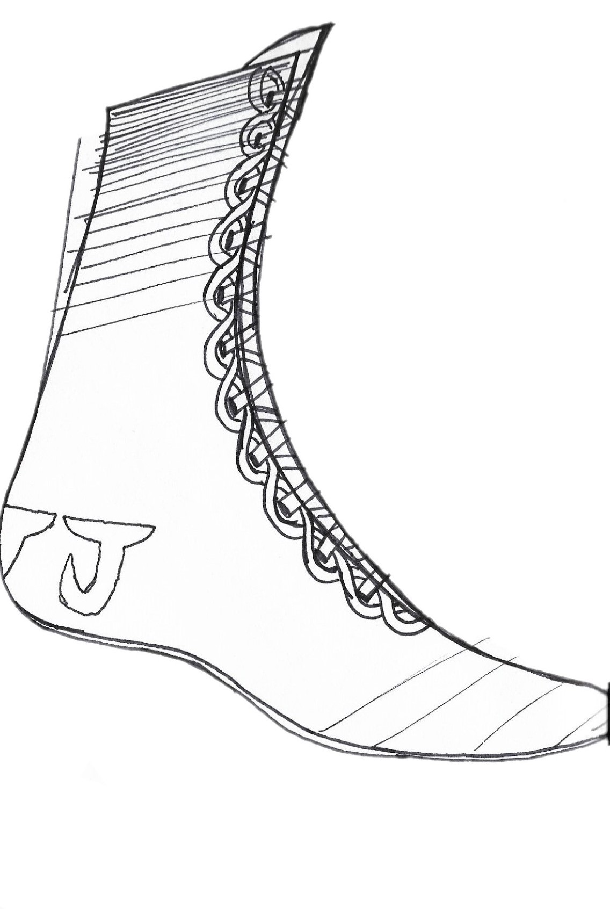

Pain Points
An important piece of boxing shoes is the grip on the bottom. Boxers are constantly making sharp movements, and need shoes that will provide traction when they quickly get out of the way of an opponent's punch.
Another important consideration for boxing shoes is to make them as light as possible, so that boxers can be nimble.






Thumbnail drawings of some initial concepts.